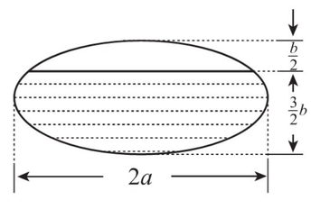

排在前面的物理题。别被物理名词吓退，建立直角坐标系，利用对称性可知水平分力对消为 0，写出微元 $dF_y$ 直接算定积分。
-
(4) 设线密度为 $1$ 的细直棒两端点分别位于 $(-1,0)$ 和 $(1,0)$，质量为 $m$ 的质点位于 $(0,1)$，$G$ 为引力常量，则该细直棒对该质点的引力大小为
高等数学
面积、体积、弧长、旋转曲面面积、质心及力学应用
排在前面的物理题。别被物理名词吓退，建立直角坐标系，利用对称性可知水平分力对消为 0，写出微元 $dF_y$ 直接算定积分。
(4) 设线密度为 $1$ 的细直棒两端点分别位于 $(-1,0)$ 和 $(1,0)$，质量为 $m$ 的质点位于 $(0,1)$，$G$ 为引力常量，则该细直棒对该质点的引力大小为
拐点与旋转体体积综合大题。先求二阶导求出拐点坐标，无界区域绕 $x$ 轴旋转体积按广义积分做，切忌把线段 $OM$ 产生的圆锥体积漏掉。
已知 $M(x_0,y_0)$ 是曲线 $\displaystyle y=\frac{1}{1+x^2}\qquad (x\ge 0)$ 的拐点，$O$ 为原点.记 $D$ 是第一象限中以曲线 $\displaystyle y=\frac{1}{1+x^2}\qquad (x\ge x_0),$ 线段 $OM$ 及 $x$ 正半轴为边界的无界区域，求 $D$ 绕 $x$ 轴旋转所成旋转体的体积.
(6) 设单位质点 $P$，$Q$ 分别位于点 $\left( 0, 0 \right)$ 和 $\left( 0, 1 \right)$ 处，$P$ 从点 $\left( 0, 0 \right)$ 出发沿 $x$ 轴正向移动，记 $G$ 为引力常量，则当质点 $P$ 移动到点 $\left( 1, 0 \right)$ 时，克服质点 $Q$ 的引力所做的功为
(15) 某物体以速度 $\displaystyle v(t)=t+k\sin\pi t$ 做直线运动。若它从 $t=0$ 到 $t=3$ 的平均速度是 $\dfrac52$，则 $k=$
定积分求体积极值。先用旋转体体积公式写出关于截距 $t$ 的函数 $V(t)$，再对 $t$ 求导找极大值点，几何计算和导数极值两段都很规整。
设 $t>0$，曲线 $\displaystyle y=\sqrt{x}e^{-x}$ 与直线 $x=t,\ x=2t$ 及 $x$ 轴所围平面图形绕 $x$ 轴旋转所得的旋转体体积为 $V(t)$，求 $V(t)$ 的最大值。
(12) 曲线 $\displaystyle y=\int_{-\sqrt3}^{x}\sqrt{3-t^2}\,dt$ 的弧长为 $\displaystyle$ .
已知平面区域 $\displaystyle D=\left\{(x,y)\mid 0\le y\le \frac{1}{x\sqrt{1+x^2}},\ x\ge 1\right\}.$ 1. 求 $D$ 的面积； 2. 求 $D$ 绕 $x$ 轴旋转所成旋转体的体积。
(15) 已知曲线 $L$ 的极坐标方程为 $r = \sin 3\theta \quad \left( 0 \le \theta \le \frac{\pi}{3} \right)$ 则 $L$ 围成的有界区域的面积为 .
积分与弧长综合大题。两端同时求导解出 $f(x)$，套用直角坐标弧长积分公式 $\sqrt{1+y'^2}$，根号下正好能配成完全平方直接开方。
$f(x)$ 满足 $\displaystyle \int \frac{f(x)}{\sqrt{x}} \,\mathrm{d}x=\frac{1}{6}x^{2}-x+C,$ $L$ 为曲线 $y=f(x)$，其中 $4 \le x \le 9$。$L$ 的弧长为 $s$，$L$ 绕 $x$ 轴旋转一周所形成的曲面的面积为 $A$，求 $s$ 和 $A$。
(12) 斜边长为 $2a$ 的等腰直角三角形平板铅直地沉没在水中，且斜边与水面相齐。记重力加速度为 $g$，水的密度为 $\rho$，则该平板一侧所受的水压力为 .
函数方程与旋转体体积。方程里把 $x$ 换成 $1/x$ 联立解出 $f(x)$，求体积时注意积分变量选择，选好绕 $x$ 轴还是 $y$ 轴算壳层微元。
设函数 $f\left( x \right)$ 的定义域为 $\left( 0,+\infty \right)$ 且满足 $\displaystyle 2f\left( x \right)+x^{2}f\left( \dfrac{1}{x} \right)=\dfrac{x^{2}+2x}{\sqrt{1+x^{2}}}$ 求 $f\left( x \right)$，并求曲线 $y=f\left( x \right)$，$y=\dfrac{1}{2}$，$y=\dfrac{\sqrt{3}}{2}$ 及 $y$ 轴所围图形绕 $x$ 轴旋转所成旋转体的体积。
(12) 函数 $y=\ln\cos x\left(0\le x\le \frac{\pi}{6}\right)$ 的弧长为 .
设 $n$ 为正整数，记 $S_n$ 为曲线 $\displaystyle y=e^{-x}\sin x\qquad (0\le x\le n\pi)$ 与 $x$ 轴之间图形的面积。求 $S_n$，并求 $\lim\limits_{n\to\infty}S_n$。
已知曲线 $\displaystyle L:y=\frac49x^2\quad (x\geq 0),$ 点 $O(0,0)$，点 $A(0,1)$。设 $P$ 是 $L$ 上的动点，$S$ 是直线 $OA$ 与直线 $AP$ 及曲线 $L$ 所围成图形的面积。若 $P$ 运动到点 $(3,4)$ 时沿 $x$ 轴正向的速度是 $4$，求此时 $S$ 关于时间 $t$ 的变化率。
(6) 甲、乙两人赛跑。计时开始时，甲在乙前方 $10\mathrm{m}$ 处。图中实线表示甲的速度曲线 $v=v_1(t)$，虚线表示乙的速度曲线 $v=v_2(t)$。三块阴影部分面积的数值依次为 $10,20,3$。计时开始后乙追上甲的时刻记为 $t_0$，则（ ）

设 $D$ 是由曲线 $\displaystyle y=\sqrt{1-x^2}\quad (0\leqslant x\leqslant1)$ 与参数方程 $\displaystyle x=\cos^3t,\qquad y=\sin^3t,\qquad 0\leqslant t\leqslant\frac{\pi}{2}$ 围成的平面区域，求 $D$ 绕 $x$ 轴旋转一周所得旋转体的体积和表面积。
设 $A>0$，$D$ 是由曲线段 $y=A\sin x\left(0\leq x\leq \frac{\pi}{2}\right)$ 及直线 $y=0$，$x=\frac{\pi}{2}$ 所围成的平面区域，$V_{1}$，$V_{2}$ 分别表示 $D$ 绕 $x$ 轴与绕 $y$ 轴旋转成旋转体的体积，若 $V_{1}=V_{2}$，求 $A$ 的值。
(13) 一根长为 $1$ 的细棒位于 $x$ 轴的区间 $\left[0,1\right]$ 上，若其线密度 $\rho\left(x\right)=-x^{2}+2x+1$，则该细棒的质心坐标 $\overline{x}=$。
偏导与旋转体积大题。对偏导对 $y$ 积分恢复出含有未知函数 $C(x)$ 的表达式，代入条件定出 $f(x,y)$，再画草图看清旋转中心是 $y=-1$。
已知函数 $f\left(x,y\right)$ 满足 $\frac{\partial f}{\partial y}=2\left(y+1\right)$，且 $f\left(y,y\right)=\left(y+1\right)^{2}-\left(2-y\right)\ln y$，求曲线 $f\left(x,y\right)=0$ 所成的图形绕直线 $y=-1$ 旋转所成的旋转体的体积。
(11) 设封闭曲线 $L$ 的极坐标方程为 $r=\cos 3\theta\left(-\frac{\pi}{6}\leq \theta\leq \frac{\pi}{6}\right)$，则 $L$ 所围成的平面图形的面积为 .
设 $D$ 是由曲线 $y=x^{\frac{1}{3}}$，直线 $x=a\left(a>0\right)$ 及 $x$ 轴所围成的平面图形，$V_{x},V_{y}$ 分别是 $D$ 绕 $x$ 轴、$y$ 轴旋转一周所得旋转体的体积，若 $V_{y}=10V_{x}$，求 $a$ 的值。
设曲线 $L$ 的方程为 $y=\frac{1}{4}x^{2}-\frac{1}{2}\ln x\left(1\leq x\leq e\right)$。
（1）求 $L$ 的弧长；
（2）设 $D$ 是由曲线 $L$，直线 $x=1,x=e$ 及 $x$ 轴所围平面图形，求 $D$ 的形心的横坐标。
过点 $\left(0,1\right)$ 作曲线 $L:y=\ln x$ 的切线，切点为 $\boldsymbol{A}$，又 $L$ 与 $x$ 轴交于 $\boldsymbol{B}$ 点，区域 $D$ 由 $L$ 与直线 $\boldsymbol{A}\boldsymbol{B}$ 及 $x$ 轴围成，求区域 $D$ 的面积及 $D$ 绕 $x$ 轴旋转一周所得旋转体的体积。
(11) 曲线 $y=\int_{0}^{x}\tan t\mathrm{~d}t\left(0\leq x\leq \frac{\pi}{4}\right)$ 的弧长 $s=$ .
一容器的内侧是由曲线绕 $y$ 轴旋转一周而成的曲面，该曲线由 $x^{2}+y^{2}=2y\left(y\geq \frac{1}{2}\right)$ 与 $x^{2}+y^{2}=1\left(y\leq \frac{1}{2}\right)$ 连接而成。
（I）求容器的容积；
（II）若将容器内盛满的水从容器顶部全部抽出，至少需要做多少功？长度单位为 $\mathrm{m}$，重力加速度为 $g\ \mathrm{m}/\mathrm{s}^{2}$，水的密度为 $10^{3}\ \mathrm{kg}/\mathrm{m}^{3}$。
(12) 当 $0 \le \theta \le \pi$ 时，对数螺线 $r = e^{\theta}$ 的弧长为 ..
柱体贮油罐质量物理题。横截面是椭圆，油罐平放时积分变量沿高度积，微元面积是一块椭圆弦长弓形，利用椭圆对称性化简积分。
一个高为 $l$ 的柱体形贮油罐，底面是长轴为 $2a$、短轴为 $2b$ 的椭圆。现将贮油罐平放，当油罐中油面高度为 $\frac{3}{2}b$ 时，计算油的质量。（长度单位为 $\mathrm{m}$，质量单位为 $\mathrm{kg}$，油的密度为常数 $\rho \mathrm{kg}/\mathrm{m}^{3}$）
